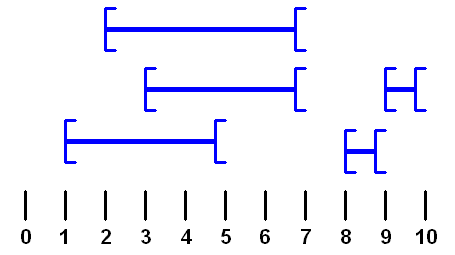
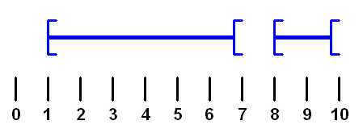

Ceci est un post invité de Réchèr posté sous licence creative common 3.0 unported.
Kikoo amis matheux ou pas. Aujourd’hui, on va se faire un petit algo de derrière les fagots. Vous n’en aurez peut-être jamais besoin dans le monde réel, mais, qui a dit qu’on allait se contenter uniquement de ce dont on a besoin ? De plus, je présenterais, à la fin, une astuce générique d’algorithmiciens.
Pré-requis
- Connaître très vaguement la notion des O(n²), O(truc), … qui définissent le temps d’exécution d’un algorithme en fonction de la quantité de données à traiter. (Si ça vous parle pas c’est pas grave).
- Savoir que le pluriel d’intervalle n’est pas “intervaux”.
Petite précision : pour définir des intervalles d’entiers, j’emploierais la convention pythonienne : le dernier élément n’est pas inclus. C’est à dire que [2, 7] correspond à 5 éléments : 2, 3, 4, 5, 6.
Énoncé
Soit une liste de couple de nombres, représentant des intervalles. Ils sont tout en vrac, y’en a qui se chevauchent, d’autres qui s’inclusent, etc. Bref, l’ensemble fait penser à une partouse animale multi-espèces.
exemple : [ [2, 7], [3, 7], [1, 5], [9, 10], [8, 9] ]

Vous voulez une méthode pour rassembler tout ça, et obtenir une liste d’intervalles, triée, sans chevauchement, correspondant à la fusion de tous les intervalles de départ. En maths, on appelle cette opération une union. En partouse animale multi-espèces, on appelle aussi ça une union, mais ce n’est pas le sujet.
résultat souhaité : [ [1, 7], [8, 10] ]

Solutions auxquelles on pense en premier
Le bourrin pas-à-pas
On récupère le début d’intervalle le plus à gauche, et la fin la plus à droite. On boucle entre ces deux valeurs. À chaque itération, on effectue le traitement suivant :
- Vérifier si la valeur courante est dans au moins un intervalle.
- Si oui, et que juste avant on était dans aucun intervalle, alors on marque cette valeur comme un début d’intervalle.
- Si non, et que juste avant on était dans au moins un intervalle, alors on marque cette valeur comme une fin d’intervalle.
Désavantages
Si, au départ, on a deux intervalles très éloignés, par exemple [0, 2] et [1000000, 1000002] on va faire une boucle de 1000002 itérations. Pour traiter 2 intervalles, c’est un peu lourd.
Ça ne marche qu’avec des entiers. Si on a des intervalles de réels, on itère comment ? En avançant de 0.0000000001 en 0.0000000001 ? Même problème avec des intervalles de date-heure.
Le bourrin cumulatif
On crée une liste géante de booléens, tous à False, qui s’étend du premier début d’intervalle à la fin du dernier. Chaque booléen indiquera si le nombre correspondant se trouve dans au moins un intervalle. On met les bons booléens à True en parcourant les intervalles de la liste initiale. Puis, on construit la liste finale d’intervalles, en se basant sur les booléens.
Désavantages
Si on a en entrée un million de fois l’intervalle [10, 210], on va mettre un million de fois à True la même suite de 200 booléens. 200 millions d’opérations pour ressortir un unique intervalle [10, 210].
Même problème que précédemment. Ça ne marche qu’avec des nombres entiers.
L’enfileur de perles
On a d’un côté la liste finale des intervalles (initialisée à vide), et de l’autre, la liste initiale, en bordel. On passe les intervalles d’une liste à l’autre, un par un, en testant les cas suivants :
- Le début et la fin de l’intervalle en cours n’est dans aucun intervalle final -> ça fait un nouvel intervalle final.
- Le début est dans un intervalle final, mais pas la fin -> ça rallonge l’interval final existant.
- La fin est dans un intervalle final, mais pas le début -> ça rallonge l’intervalle final existant, mais par l’autre côté.
- La fin et le début sont dans le même intervalle final -> l’intervalle en cours ne sert à rien.
- La fin et le début sont dans deux intervalles finaux différents. -> il faut fusionner les deux intervalles finaux.
Et en plus de tout ça, il faut également tester s’il n’y a pas des intervalles finaux entièrement inclus dans l’intervalle en cours. Auquel cas, ils ne servent plus à rien, et doivent être enlevé de la liste.
Désavantages
Une bonne grosse prise de tête à coder tous les cas possibles, sans rien oublier, sans bug.
Le fait de chercher si un nombre se trouve dans une liste d’intervalles, fut-elle triée, est une opération qui prend un certain temps. Ça peut s’optimiser avec de la dichotomie ou des trucs du genre, mais quand même.
Par contre, cette algo marche avec des nombres réels et des date-heure. Youpi.

Et si on arrêtait les conneries ?
Dans ces premières solutions, on considère les intervalles comme des objets immuables. Il faut en traiter un entièrement avant de passer au suivant. Mais on peut aussi les voir comme deux événements distincts (un début et une fin), que l’on peut dissocier totalement, et traiter dans leur ordre d’arrivée. On ne sera plus capable de retrouver quel début correspond à quelle fin, mais ça on s’en fout, y’a rien qui ressemble plus à un intervalle qu’un autre intervalle.
Imaginez un petit bonhomme (ou une petite bonne femme, respectons la parité). Au départ, il est au niveau du sol. Il avance vers la droite. Quand il rencontre un début d’intervalle, il monte sur un mur d’un étage. Quand il rencontre une fin, il descend d’un étage. Il peut être sur plusieurs étages superposés. Au fur et à mesure qu’il se déplace, on note les endroits où il se retrouve sur le sol. Ces endroits correspondent à des zones sans aucun intervalle.

Le code
def tri_bonhomme_sur_un_mur(list_intervalle_en_bordel): """ Effectue une union de tous les intervalles indiqués en paramètre. Données d'entrée : une liste de liste de deux éléments, représentant des intervalles. - Le type des éléments n'est pas imposé. Il faut juste qu'on puisse les ordonner et les trier. - Dans chaque liste de deux éléments, le premier doit être plus petit que le second. La fonction ne vérifie pas ces contraintes. Si elles ne sont pas respectées, le comportement est indéterminé. Ça peut planter, ça peut renvoyer un résultat faux sans avertissement, etc. Sortie : une liste de liste de deux éléments, unionnisée et triée comme il faut. """ # On extrait tous les débuts d'intervalles, et toutes les fins. list_debut = [ interv[0] for interv in list_intervalle_en_bordel ] list_fin = [ interv[1] for interv in list_intervalle_en_bordel ] # On les trie, pour pouvoir les traiter de gauche à droite. list_debut.sort() list_fin.sort() # Cette liste contiendra les intervalles unionnisés et triés. list_intervalle_final = [] # indique le nombre d'invervalle superposés dans lesquels on se trouve # actuellement. (C'est à dire : le nombre d'étages sur lequel # marche le bonhomme). nb_superposition = 0 # Lorsqu'on est dans un ou plusieurs intervalles superposés, on doit # se souvenir à quelle position on est entré dans le premier. # Cela permettra de créer l'intervalle final, lorsqu'on sera # complètement sorti de la superposition en cours. debut_intervalle_courant = 0 # C'est parti ! Le petit bonhomme avance. On lui fait traiter les # événements d'entrée et de sortie d'intervalle au fur et à mesure # qu'ils arrivent. while list_debut: # Le premier élément de list_debut, c'est le premier début # d'intervalle qu'on rencontrera. Le premier élément de list_fin, # c'est la première fin d'intervalle qu'on rencontrera. On # détermine, parmi ces deux événements, lequel on rencontrera en # tout premier. # # La fonction cmp renvoie -1, 0, ou 1, selon la comparaison # effectuée entre les deux valeurs passées en paramètre. # Faire un petit help(cmp) pour connaître les détails. ordre_debut_fin = cmp(list_debut[0], list_fin[0]) if ordre_debut_fin == -1: # L'événement rencontré est un début d'intervalle. # On enlève l'événement de la liste, puisqu'on va le traiter, # là, tout de suite. pos_debut = list_debut.pop(0) if nb_superposition == 0: # On était dans aucun intervalle, et on vient d'en # rencontrer un. Dans la liste finale d'intervalles, # ça va donc compter comme un début. On retient # cette info. debut_intervalle_courant = pos_debut # Dans tous les cas, on ajoute une superposition d'intervalle # (le bonhomme monte d'un étage). nb_superposition += 1 elif ordre_debut_fin == +1: # L'événement rencontré est une fin d'intervalle. # On l'enlève de la liste. pos_fin = list_fin.pop(0) # On enlève une superposition d'intervalle. nb_superposition -= 1 if nb_superposition == 0: # Après avoir enlevé la superposition, on se retrouve # avec 0 intervalle superposé. # (Le bonhomme est redescendu jusqu'au niveau du sol). # Il faut donc enregistrer ça comme une fin d'intervalle # final. Tant qu'on y est, on crée tout de suite ce nouvel # intervalle final et on le met dans la liste. nouvel_intervalle = (debut_intervalle_courant, pos_fin) list_intervalle_final.append(nouvel_intervalle) else: # On rencontre à la fois un début et une fin d'intervalle. # Rien de spécial à faire. Faut juste virer les 2 événements # traités de leur liste respectives. list_debut.pop(0) list_fin.pop(0) # Durant toute cette boucle, la variable nb_superposition augmente # et diminue. Mais elle n'est jamais censée devenir négative. # Si ça arrive, c'est que les données d'entrées sont mal foutues. # On entre dans un cas d'indétermination. # Arrivé à la fin de la boucle, il peut rester, ou pas des éléments # dans list_fin. Ce qui est sûr, c'est que list_debut se vide # avant list_fin. Si ce n'est pas le cas, c'est encore un cas # d'indétermination. if list_fin: # On a passé tous les débuts d'intervalle, mais il reste des # fins. Ça veut dire qu'on est encore dans un ou plusieurs # intervalles. On devrait normalement avoir : # len(list_fin) == nb_superposition. Si c'est pas le cas, c'est # un cas d'indétermination. # # On pourrait traiter les événements de fin d'intervalle un par un, # et diminuer progressivement nb_superposition. Mais on s'en fout, # c'est pas nécessaire. On prend juste la fin d'intervalle qui # supprimera la dernière superposition (c'est à dire la dernière # fin d'intervalle), et on construit un dernier intervalle final # avec ça. pos_fin = list_fin[-1] nouvel_intervalle = (debut_intervalle_courant, pos_fin) list_intervalle_final.append(nouvel_intervalle) return list_intervalle_final |
Les avantages (parce que y’a aucun désavantages)
Ça marche avec des réels, des dates, et de manière générale, tout ce qu’on peut trier.
>>>tri_bonhomme_sur_un_mur([ [2, 7], [3, 7], [1, 5], [9, 10], [8, 9] ]) [(1, 7), (8, 10)] # Testez pas ça chez vous ! Ça prend trois plombes ! Mettez juste 1000. >>>tri_bonhomme_sur_un_mur( [ [10, 210], ] * 1000000 ) [(10, 210)] # Voyons voir ce que ça donne avec des réels # (dont certains sont négatifs, tant qu'à faire). >>>tri_bonhomme_sur_un_mur([ [-7.2, -6.9], [-8.4, -5.3], [-10.5, -5.25], [-1.7, 0.01], [0.0, 4.0], [12.125, 13.9, ], [13.9, 15.0]]) [(-10.5, -5.25), (-1.7, 4.0), (12.125, 15.0)] # et avec des dates >>>from datetime import datetime >>>tri_bonhomme_sur_un_mur([ [datetime(2012, 12, 21, 16, 54), datetime(2013, 02, 16, 12, 59)], [datetime(2013, 02, 14, 2, 0), datetime(2069, 01, 01, 13, 37), ] ] ) [(datetime.datetime(2012, 12, 21, 16, 54), datetime.datetime(2069, 1, 1, 13, 37))] |
En ajoutant à peine 2-3 lignes de code à la fonction, on peut récupérer le nombre maximal d’intervalles superposés.
En re-ajoutant quelques autres lignes, on peut récupérer les zones dans lesquelles ce maximum est atteint. Ce qui pourrait servir pour effectuer l’opération mathématique d’intersection. (Je vous laisse chercher ça par vous mêmes).
L’algorithme est principalement constitué d’une bi-boucle, c’est à dire une boucle unique, qui avance dans deux listes différentes (je viens d’inventer ce terme, ne m’embêtez pas). C’est encore plus simple que deux boucles imbriquées. Le nombre d’itérations à effectuer est égal au nombre d’intervalle multiplié par deux, c’est tout. Dans tous les cas limites présentés ci-dessus, ça fait une solution acceptable, demandant un temps d’exécution peu pharaonique.
Mais ou est passé la complexité ?
Les premières solutions avaient l’air de demander énormément de temps d’exécution, surtout avec beaucoup d’intervalles en entrée. Ça ne semble pas être le cas pour la solution du “bonhomme sur un mur”. Pourtant, la complexité d’une tâche, ça ne disparaît pas comme par magie. Y’aurait-il une entourloupe quelque part ?
Il y en a une. Ce sont les deux opérations de tri effectuées au début de la fonction. Un tri, ce n’est pas anodin, et son temps d’exécution peut augmenter très beaucoup et très vite. La complexité n’a pas disparue, on n’a fait que la déplacer vers des tris. Alors finalement, ma solution n’est pas si bien que ça ?
Eh bien si. Parce que le tri, même s’il reste coûteux en temps et en ressource, est un problème archi-connu, archi-réglé, et archi-optimisé. Le python, comme beaucoup d’autres langages, profite pleinement du travail réalisé par des centaines de matheux algorithmologues, qui se sont masturbés l’esprit sur des centaines de méthodes de tri différentes.
Photo prise dans le bureau d'un chercheur en algorithmologie.
C’est ça l’astuce générique dont je vous parlais au début. Face à un nouveau problème, le matheux sort son zguègue tente de trouver des équivalents à un ou plusieurs problèmes connus, que lui et ses amis matheux ont déjà réglés. C’est souvent bien plus simple que de tenter de régler le problème directement, en partant de rien.
“Un nain éjacule bien plus loin lorsqu’il est perché sur les épaules d’un géant.” Et pour respecter la parité, j’ajouterais qu’une naine femme-fontainise bien plus loin lorqu’elle est perchée sur les épaules d’une géante.

{kind=link}
{kind=link}
{kind=link}
{kind=link}
{kind=link}
{kind=link}
Sympa. Vous avez pensé à mettre le bouton Flattr dans le flux RSS ?
Merci beaucoup, bon article, très facile à lire ! — bon, sauf le code parce que c’était déjà clair sans ça.
@badname: je viens de le rajouter (normalement si le plugin ne fait aps des siennes). Et j’ai aussi activé flattr pour les posts invités, donc recher tu peux mettre dans ton compte ton propre lien flattr qui apparaitra pour tes articles. Parceque bon, je voudrais pas priver nos posters invités d’une source de revenur de 30 centimes par mois, minimum (3 euros en tout pour nous depuis le début \o/)
Merci :-)
Je viens étaler ma science : c’est ce qu’on appelle l’approche événementielle.
Pour simuler un système dans le temps, par exemple des utilisateurs de vélib, il y a 3 approches.
1) purement discrète, on regarde ce qui se passe à l’instant 1 puis à l’instant 2 puis etc. Problème : c’est très long, il y a de grands moments sans qu’il ne se passe rien (la nuit), et on ne prend en compte que des instants entiers.
2) l’approche des simulationnistes, avec chaque trajet qui correspond à un thread ou quelque chose dans le genre… Grosse prise de tête, mais les simulationnistes, fidèles à leur habitude, disent “oh oui c’est bon !” même s’ils détestent.
3) L’approche décrite dans l’article, la meilleure dans la plupart des cas, où l’on dit “à tel instant futur, il y aura tel événement retenu quelque part en mémoire”. Par exemple, au début d’un trajet, on indique à quel moment et où aura lieu l’arrivée. Ensuite, on suit les événements dans l’ordre chronologique, de façon discrète, mais en allant uniquement à l’essentiel. Et ça permet effectivement de traiter des instant non entiers.
Fin de l’étalage de science, merci.
Ah merci pour l’étalage de science. Je savais pas que mon approche avait un nom générique. Pour moi, l’événementiel c’est des hôtesses cochonnes en tailleur, des toilettes toujours occupées, et des difficultés à tenir dans ses mains un verre de punsch + une verrine aux crevettes + la petite fourchette de la verrine.
J’avais pas de compte flattr, je viens de m’en créer un pour l’occasion. Je pige pas comment on connecte le compte à la prose que je raconte ici. Plus d’infos à ce sujet dans les notes privées du blog.
Merci pour l’article. Et les precisions de Safran permettent de partiellement répondre à la question que je m’etais posé: OK, ton algo, il est cool, lisible, efficace, mais comment faire pour le trouver/y penser ? Parceque si on se doute bien qu’en utilisant le plus de fonctions du langage, on sera mieux optimisé (et lisible), encore faut-il trouver le moyen de le faire. Je doute que d’arriver un jour à resoudre un probleme similaire en me disant “Oh, tient, et si j’essayais de resoudre ca en utilisant sort() ? “
C’est surtout que tu as astucieusement utilisé cette approche, même sans la connaitre, pour un problème qui n’a rien a voir.
Je pense que d’autres l’ont utilisée avant toi, mais je ne suis pas sûr que j’y aurais pensé moi-même, alors que je connais l’événementiel.
Ça rejoint ce que tu dis à la fin de l’article : si on arrive à se rapporter à un problème connu, on est gagnant.
Vous savez comment on fait des œufs durs avec une casserole ? On remplit d’eau la casserole, on fait bouillir, on met les œufs, et 5 min après c’est bon.
Vous savez comment on fait des œufs durs avec un casserole d’eau bouillante ? On vide la casserole et on se ramène au problème précédent.
(Et pour que ce soit plus facile à éplucher, passez-les dans l’eau froide directement après la cuisson)
Lol. Blague d’informaticien à la con.
C’est une blague de mathématiciens. Citée ici Logiciels Libres et Entreprises comme exemple de ce qu’il ne faut pas faire.
Moi je la connaissais plutôt comme la différence entre un physicien et un mathématicien.
Je me suis pris au jeu des intervalles et tente d’implémenter mon propre algorithme…
J’avoue humblement n’avoir pas très bien compris la bonne solution avec les niveaux, néanmoins je vous présente “fièrement” ma propre solution, de complexité en
O(n*log(n)).Une première fonction
intervals_to_ordered_intervals()travaille en créant deux séquences avec les intervalles, ordonnées l’une sur le premier élément, l’autre sur le deuxième, ce qui permet de rassembler les intervalles contigus.O(n*log(n))Ensuite une deuxième fonction
ordered_intervals_to_disjoint_intervals_iter()parcourt la séquence ordonnée et “nettoyée” par la première fonction pour remplacer les intervalles qui se chevauchent.O(n)Voir le code pour plus de détails :
intervals_to_disjoint_intervalsÇa m’a l’air un peu plus compliqué comme code. Mais peut-être plus rapide au final.
Je regarde tout ça en détail ce week-end, et je te dis ce que j’en pense, (si j’en pense quelque chose).
Je crois qu’il n’est pas si compliqué, et plus court si tu enlèves les assertions qui ne sont là que par sécurité.
Faire attention à ce que la fonction
ordered_intervals_to_disjoint_intervals_iter()est un générateur.Si tu as des questions n’hésite pas.
Bonjour,
Je souhaite écrire ce super algo en pascal.
Ne connaissant pas le Python, je n’ai pas compris toutes les subtilités du code et je me pose 2 questions:
– Pourquoi supprimer les éléments lorsqu’ils sont égaux entre la liste de début et la liste de fin (cas du else) ?
On pourrait avoir un intervalle [10,10] qu’il faut conserver.
– Lorsque l’on trie la liste de début en ordre croissant ne faut-il pas également supprimer les doublons ? Idem pour la liste de fin.
Merci beaucoup pour vos réponses.